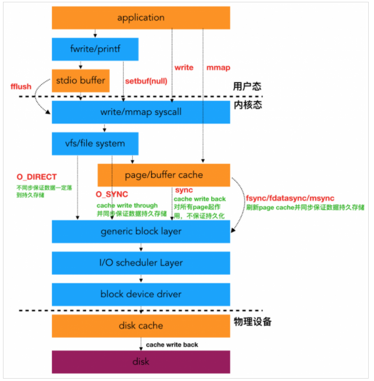

FUSE是什么？
- FUSE是Filesystem in Userspace的缩写，也就是用户态文件系统
FUSE是一个用户空间文件系统的框架
- 内核模块fsue.ko: 用来接收VFS传递下来的IO请求，并且把这个IO封装之后通过管道发送到用户态；
- 用户态lib库libfuse：解析内核态转发出来的协议包，拆解成常规的IO请求；
- mount 工具fsuermount;
可以在用户态实现文件系统，并且让IO在内核态和用户态文件系统之间自由穿梭。
为什么需要FUSE
- 文件系统一般是实现在内核里面的，比如，Ext4、Fat32、NTFS(Kernel原生版)等常见的文件系统，其代码都在内核中，内核开发的难点在于调试和排查故障，而FUSE特殊之处就是，其文件系统的核心逻辑是在用户空间实现的。
- 优点：开发调试效率高
- 缺点：损失性能
内核文件系统
- 内核文件系统 是内核的一个模块
- IO流程图

带fuse之后
-
- 背景：一个用户态文件系统，挂载点为 /tmp/fuse ，用户二进制程序文件为 ./hello（该二进制程序可以理解为用户自己根据自身需求实现的文件系统）;
- 当执行 ls -l /tmp/fuse 命令的时候，流程如下：
- (1) IO 请求先进内核，经VFS传递给内核 FUSE 文件系统模块；
- (2) 内核 FUSE 模块把请求发给到用户态，由 ./hello 程序接收并且处理。处理完成之后，响应原路返回；
内核FUSE模块在内核态中间做协议封装和协议解析的工作
- 接收从VFS传下来的请求，并封装成FUSE协议转发到用户态
- 接收用户态的响应，随后返回给用户
fuse.ko 和 libfuse库的作用
这两个模块一个位于内核，一个位于用户态，是配套使用的，最核心的功能是协议封装和解析。
- 内核fuse.ko用于接收VFS下来的IO请求，然后封装成FUSE数据包，转发到用户态。
- 用户态文件系统接收到这个FUSE数据包
- 如果想要看懂这个数据包，就必须实现一套FUSE协议的代码，这套代码是公开透明的，属于FUSE框架的公共的代码，这种代码不需要让所有的用户文件系统都重复实现一遍，于是libfuse库就诞生了。
- libfuse公共库
- 用户文件系统调用这个库与 内核交互
用户态，内核态的纽带
- /dev/fuse ，这个虚设备文件就是内核模块和用户程序的桥梁。
- 整个过程中，用户的IO通过正常的系统调用进来，走到内核文件系统FUSE
- FUSE文件系统把这个IO请求按照FUSE协议封装起来，打包成特定的格式
- 通过 /dev/fuse 这个管道传递到用户态。
- 在此之前有守护进程监听这个管道，看到有消息出来之后，立马读出来，
- 然后利用libfuse库解析协议，之后就是用户文件系统的代码逻辑了。
挂载FUSE内核文件系统 便于管理
1 | mount -t fusectl none /sys/fs/fuse/connections |
本质
fuse本质上（数据处理时）是处于现有文件系统之上的（具体实现是和现有文件系统处于同一个层次的），fuse不参与底层磁盘数据的存取，只负责处理对读取和写入的数据在逻辑上的操作而已。
过程
当应用程序在一个mount fuse的文件系统上执行操作，虚拟文件系统路由这个操作到fuse内核驱动，然后创建一个fuse request放到fuse的队列中，此时应用程序进程处于等待状态；fuse的用户态的daemon从/dev/fuse读取request，处理过程中damon需要陷入内核态读/dev/fuse设备，处理完成了把处理结果写入到/dev/fuse设备，最后在唤醒应用程序的进程
- 陷入内核态 代表还是要经过内核的驱动
- 文件系统要实现对具体的设备的操作的话必须要使用设备驱动提供的接口，而设备驱动位于内核空间，这时可以直接读写块设备文件，就相当于只把文件系统摘到用户态，用户直接管理块设备空间。
用户进程和操作系统进行交互（read文件为例）：
该fuse文件系统挂载在现有ext4文件系统之上.
- 1.一个用户进程发出read文件请求；
- 2.该请求被转换为一个内核系统调用，内核VFS层调用fuse文件系统内核模块；
- 3.fuse 内核模块通过/dev/fuse，将read请求传递到fuse 用户态进程；
- 4.fuse daemon根据用户实现的read接口，产生新的系统调用，最终调用ext4文件系统的read操作函数，从存储介质中提取读操作要求的数据（page cache中有，直接从其中获取，否则读磁盘）；
- 5.内核将数据返回给fuse文件系统；
- 6.用户级文件系统再次调用内核操作，把数据返回给用户进程；
- 7.内核将数据传给用户进程完成操作。
库函数fuse_main()具体处理流程：
- 1.先打开设备文件/dev/fuse；
- 2.然后挂载FUSE文件系统；
- 3.产生FUSE文件系统指针；
- 4.初始化FUSE文件系统的操作函数集：
- 5.初始化信号处理函数集；
- 6.进入等待循环：
- 从设备文件/dev/fuse中读取来自内核模块的请求；
- 运行相应的操作函数，并获取返回结果；
- 将返回给内核的应答结果写入设备文件/dev/fuse中；
– 用户态ceph-fuse -c /etc/ceph/ceph.conf -o nonempty /nas/cephfs --client_mds_namespace cephfs --id cephfs.node1--client_mds_namespace cephfs 指定ceph 文件系统
转载请注明来源，欢迎对文章中的引用来源进行考证，欢迎指出任何有错误或不够清晰的表达。可以在下面评论区评论，也可以邮件至 1065016533@qq.com